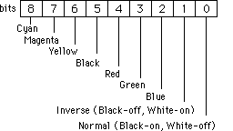
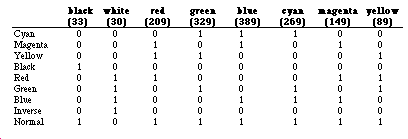

Legacy Document
Important: This document is part of the Legacy section of the ADC Reference Library. This information should not be used for new development.
Current information on this Reference Library topic can be found here:
ADC Home > Reference Library > Technical Notes > Legacy Documents > User Experience >
Important: This document is part of the Legacy section of the ADC Reference Library. This information should not be used for new development.
Current information on this Reference Library topic can be found here:
|
IntroductionQuickDraw has always been able to deal with color, just on a very limited basis. Most applications have not made use of this feature, since Color QuickDraw-based Macintosh computers come with a better color model. There are, however, a few nice features that come with the old-style color model. With the old-style colors, it is easy to print color on an ImageWriter with a color ribbon. Another advantage is that developers do not have to write special-case code depending on whether or not a machine has Color QuickDraw. Now that you are ready to convert to the old-style colors, there are a few things you should know about that do not work with old-style colors. This Note covers the limitations of using old-style colors, as well as the best ways to work around these limitations. LimitationsThe most obvious limitation is that of only eight colors: black, white, red, green, blue, cyan, yellow, and magenta. This limitation is a problem only if you want to produce a color-intensive application; if this describes your application, then you need not read any further in this Note. The next limitation is that off-screen buffers are not very useful. You can
draw into off-screen buffers, but there is no way to get the colors back from
the buffer. This leads into the next limitation, which is that
When you call It is possible to work with an off-screen buffer and the old-style colors, but it requires a lot of extra work. Unless the objects are really complex, then it is probably easier to just draw the objects directly into your window. One other limitation does exist. Consider the following code sample. One would assume that this sample would work at all times.
Surprise. It does not always work. The saved value for the The proper way to set and reset the foreground color with classic QuickDraw's
This Note also applies to the routine What WorksThe easiest way to work with these limited colors is to use pictures. When you
draw the images, you should draw into a picture. Then when you want to draw the
images into your window or to a printer, call Once you have the picture, you can use it to draw into the screen or to the
printer port. You can also set the What Do Those Constants Mean Anyway?The correct values are
The following discussion is theoretical and was based on the color constants for the MPW 3.1 interfaces. Well, those interfaces were wrong as far as the color constants. The discussion will be kept here to prove once and for all that Macintosh programming sometimes is arbitrary and not logical. On the other hand, the information about the color bits is correct. Each of the constants contains 9 bits of information, and each bit has a special meaning. Figure 1 illustrates the meaning of each of the bits, while Table 1 shows how each of the color constants fills in the appropriate bits.  Figure 1. Bit Definitions Table 1. Color-Bit Correlation  ReferencesInside Macintosh, Volume I, page I-173, QuickDraw Technical Note M.IM.Copybits--Of Time and Space and _CopyBits Downloadables
|
|